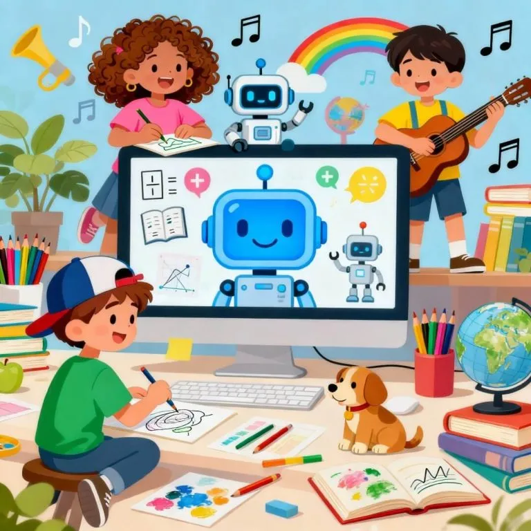

Los algoritmos de IA recomiendan música, películas y videos basados en nuestros gustos.
También se usan en videojuegos para crear personajes más realistas y experiencias interactivas.
¿Deseas buscar mas informacion sobre la IA para el entretenimiento? Solo haz click aqui abajo.
Sciencedirect